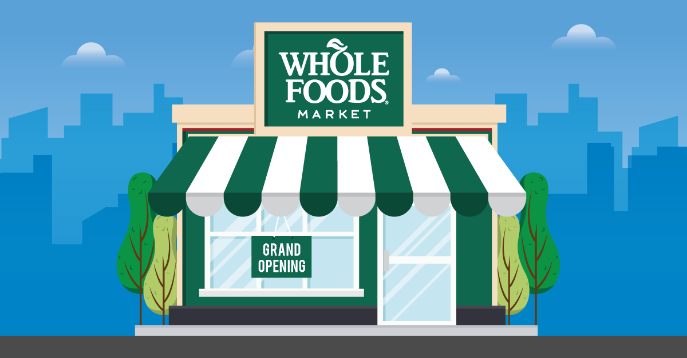

Person 1
Observations
An individual comes up to the Whole Foods self-check with a bag full of vegetables. She clicks the start
button and begins to scan the items with the bar code. She then places peppers on the scale, clicks the
select button, and looks at all the vegetable types. She hesitates for a second before clicking one of the
pepper pictures, and she then puts the pepper in her bag. She continues this with the rest of her fruit.
She then clicks the payment method, selects a credit card, and pays.
Questions
- When do you use the self-checkout station?
I use the self-checkout station almost every time I am here. I think it
is easier to deal with than waiting in line and interacting with the store clerks.
- What are the benefits of using self-checkout stations?
- I think the benefit of using self-checkout stations is you do not have to
interact with any of the store clerks, and it really is something you can just do on your own.
- Is there anything that confuses you when you use the self-checkout stations?
- I think the thing that confuses me the most when I use self-checkout
is when I have to scan the fruits and vegetables. Sometimes it is confusing because you are not sure
which type of fruit or vegetable is the one in the picture, and it gets confusing when you have multiple
of the same fruit.
- Is there anything you wish you could change when using the self-checkout stations?
- I think self-checkout is a great idea and it is pretty easy to understand.
I definitely think that weighing the fruit and vegetables is something that could be done to make
it easier.
- How long does it take to use the self-checkout station?
- It usually takes me 5 to 10 minutes to use self-checkout.
- How would the self-checkout station be challenging for a first-time user to use?
- As I said before, vegetable/ fruit weighing seems to be the most
challenging thing for first-time users. I also think it sometimes is just an overwhelming
experience the first time you do it.
Person 2
Observations
An individual comes to the self-checkout with a basket full of food. He is struggling to
scan one of his items. He tries to scan the same item several times, but the machine does not recognize it.
He goes up to the customer service person and asks for help because his item is not scanning. The customer
service person takes his keycard and scans the barcode and manually types in the item for the customer.
The customer scans the rest of his items and then pays.
Questions
- When do you use the self-checkout station?
- I usually use the self-checkout station when I only
have a couple items I have to check out, otherwise, I wait in the in-person line.
- What are the benefits of using self-checkout stations?
- I think the benefit of self-checkout is that it is faster than waiting
in the in-person line, especially when you do not have a lot of items. Also, the people checking
you out are not judging the food you are getting.
- Is there anything that confuses you when you use the self-checkout stations?
- Every once and a while there is something that does not scan right, and I have to go
talk to someone to help.
- Is there anything you wish you could change when using the self-checkout stations?
- I think just making sure that everything works and scans, especially
for people like me who are rushing to get to work and need to get a couple of things.
- How long does it take to use the self-checkout station?
- It usually takes about five minutes.
- How would the self-checkout station be challenging for a first-time user to use?
- The machines pretty much walk you through what you have to do,
so I think someone trying it for the first time could figure it out.
